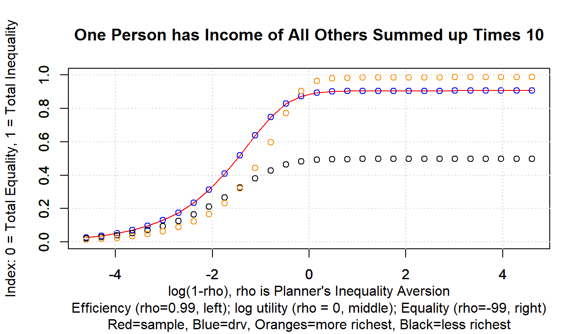

Chapter 5 Linear Regression
5.1 Linear and Polynomial Fitting
5.1.1 Fit Curves Through Points
Go back to fan’s REconTools research support package, R4Econ examples page, PkgTestR packaging guide, or Stat4Econ course page.
5.1.1.1 Polynomial Fit with N Sets of Points
There are three points defined by their x and y coordinates. We draw these points randomly, and we find a curve that fits through them. The fit is exact. If there are more than three sets of points, we will not be able to fit exactly. In the illustration before, first, we draw 3 sets of x and y points, then we draw 4 and 5 sets, and we compare the prediction results.
Note that we are not generating data from a particular set of quadratic (polynomial) parameters, we are just drawing random values. When we draw exactly three pairs of random x and y values, we can find some polynomial that provides an exact fit through the three points in 2d space.
We define the function here.
#' Test polynomial fit to random draw x and y points
#'
#' @description Draw random sets of x and y points, fit a polynomial curve through
#' and compare predictions of y and actual y values.
#'
#' @param it_xy_pairs The number of x and y pair points
#' @param it_seed The random seed for drawing values
#' @param it_poly_fit An integer value of the order of polynomial
#' @param fl_mean The mean of the the random normal draw
#' @param fl_sd The standard deviation of the random normal draw
#' @returns
#' \itemize{
#' \item rs_lm_poly - polynomial fit estimation results
#' \item df_data_predict - N by 3 where N = \code{it_xy_pairs} and
#' columns are x, y, y-predict, and residual
#' \item td_table_return - Display version of df_data_predict with title
#' }
#' @import stats, tibble, dplyr
#' @author Fan Wang, \url{http://fanwangecon.github.io}
ffi_lm_quad_fit <- function(it_xy_pairs = 3, it_seed = 123,
it_poly_fit = 2, fl_mean = 1, fl_sd = 1,
verbose = FALSE) {
# 1. Generate three pairs of random numbers
set.seed(it_seed)
mt_rnorm <- matrix(
rnorm(it_xy_pairs * 2, mean = fl_mean, sd = fl_sd),
nrow = it_xy_pairs, ncol = 2
)
colnames(mt_rnorm) <- c("x", "y")
rownames(mt_rnorm) <- paste0("p", seq(1, it_xy_pairs))
df_rnorm <- as_tibble(mt_rnorm)
# 2. Quadratic fit using ORTHOGONAL POLYNOMIAL
# For predictions, lm(y ~ x + I(x^2)) and lm(y ~ poly(x, 2)) are the same,
# but they have different parameters because x is transformed by poly().
rs_lm_quad <- stats::lm(y ~ poly(x, it_poly_fit), data = df_rnorm)
if (verbose) print(stats::summary.lm(rs_lm_quad))
# 3. Fit prediction
ar_y_predict <- stats::predict(rs_lm_quad)
df_data_predict <- cbind(df_rnorm, ar_y_predict) %>%
mutate(res = ar_y_predict - y)
if (verbose) print(df_data_predict)
# 4. show values
st_poly_order <- "Quadratic"
if (it_poly_fit != 2) {
st_poly_order <- paste0(it_poly_fit, "th order")
}
td_table_return <- kable(df_data_predict,
caption = paste0(
st_poly_order, " Fit of ", it_xy_pairs, " Sets of Random (X,Y) Points"
)
) %>%
kable_styling_fc()
return(list(
rs_lm_quad = rs_lm_quad,
df_data_predict = df_data_predict,
td_table_return = td_table_return
))
}In the first example below, we simulate 3 set of points and estimate quadratic exact fit.
ls_ffi_lm_quad_fit <-
ffi_lm_quad_fit(
it_xy_pairs = 3, it_seed = 123,
it_poly_fit = 2, fl_mean = 1, fl_sd = 1
)
ls_ffi_lm_quad_fit$td_table_return| x | y | ar_y_predict | res |
|---|---|---|---|
| 0.4395244 | 1.070508 | 1.070508 | 0 |
| 0.7698225 | 1.129288 | 1.129288 | 0 |
| 2.5587083 | 2.715065 | 2.715065 | 0 |
In the second example below, we simulate 4 set of points and estimate a quadratic non-exact fit.
ls_ffi_lm_quad_fit <-
ffi_lm_quad_fit(
it_xy_pairs = 4, it_seed = 345,
it_poly_fit = 2, fl_mean = 1, fl_sd = 1
)
ls_ffi_lm_quad_fit$td_table_return| x | y | ar_y_predict | res |
|---|---|---|---|
| 0.2150918 | 0.9324684 | 0.9373687 | 0.0049003 |
| 0.7204856 | 0.3664796 | 1.5207575 | 1.1542779 |
| 0.8385421 | 0.0722760 | -0.0080226 | -0.0802987 |
| 0.7094034 | 2.7107710 | 1.6318915 | -1.0788795 |
In the third example below, we simulate the same 4 sets of points as in the prior example, but now use a cubic polynomial to fit the data exactly.
ls_ffi_lm_cubic_fit <-
ffi_lm_quad_fit(
it_xy_pairs = 4, it_seed = 345,
it_poly_fit = 3, fl_mean = 1, fl_sd = 1
)
ls_ffi_lm_cubic_fit$td_table_return| x | y | ar_y_predict | res |
|---|---|---|---|
| 0.2150918 | 0.9324684 | 0.9324684 | 0 |
| 0.7204856 | 0.3664796 | 0.3664796 | 0 |
| 0.8385421 | 0.0722760 | 0.0722760 | 0 |
| 0.7094034 | 2.7107710 | 2.7107710 | 0 |
5.1.2 Polynomial Time Series
Go back to fan’s REconTools research support package, R4Econ examples page, PkgTestR packaging guide, or Stat4Econ course page.
5.1.2.1 Analytical Solution for Time-Series Polynomial Coefficients
This file is developed in support of Bhalotra, Fernandez, and Wang (2021), where we use polynomials to model share parameter changes over time in the context of a nested-CES problem.
5.1.2.1.1 Mth Order Polynomial and its Derivative
We have a polynomial of Mth order:
\[ y\left(t\right) = a_0 + a_1 \cdot t + a_2 \cdot t^2 + ... + a_M \cdot t^M \]
Taking derivative of of \(y\) with respect to \(t\), we have:
\[ \begin{aligned} \frac{d^{M-0}y}{dt^{M-0}} &= a_{M-0} \cdot \frac{\left(M-0\right)!}{0!} \cdot t^{-0+0} \\ \frac{d^{M-1}y}{dt^{M-1}} &= a_{M-0} \cdot \frac{\left(M-0\right)!}{1!} \cdot t^{-0+1} + a_{M-1} \cdot \frac{\left(M-1\right)!}{0!} \cdot t^{-1+1} \\ \frac{d^{M-2}y}{dt^{M-2}} &= a_{M-0} \cdot \frac{\left(M-0\right)!}{2!} \cdot t^{-0+2} + a_{M-1} \cdot \frac{\left(M-1\right)!}{1!} \cdot t^{-1+2} + a_{M-2} \cdot \frac{\left(M-2\right)!}{0!} \cdot t^{-2+2} \\ \frac{d^{M-3}y}{dt^{M-3}} &= a_{M-0} \cdot \frac{\left(M-0\right)!}{3!} \cdot t^{-0+3} + a_{M-1} \cdot \frac{\left(M-1\right)!}{2!} \cdot t^{-1+3} + a_{M-2} \cdot \frac{\left(M-2\right)!}{1!} \cdot t^{-2+3} + a_{M-3} \cdot \frac{\left(M-3\right)!}{0!} \cdot t^{-3+3} \end{aligned} \]
Given the structure above, we have the following formulation for polynomial derivative, where we have a polynomial of \(M^{th}\) order and we are interested in the \(N^{th}\) derivative:
\[ \begin{aligned} \frac{d^{N}y(M)}{dt^{N}} &= \sum_{i=0}^{M-N} \left( a_{M-i} \cdot \frac{\left(M-i\right)!}{\left(M-N-i\right)!} \cdot t^{M-N-i} \right) \end{aligned} \]
Note that the \(M^{th}\) derivative of a \(M^{th}\) order polynomial is equal to \(\left(a_M \cdot M!\right)\)
5.1.2.1.2 Repeatedly Taking Differences of Differences
Suppose the data generating process is a \(M^{th}\) order polynomial, then differencing of time-series observables can be used to identify polynomial coefficients.
In the simplest case of a 1st order polynomial with \(Y_t = a_0 + a_1 \cdot t\), given 2 periods of data, \(t=0,t=1\), we have \(a_1 = Y_2 - Y_1\), and \(a_0 = Y_0\). The rate of change in \(Y\) over \(t\) captures coefficient \(a_1\).
For a second order polynomial, while the first derivative is time-varying, the second derivative, acceleration, is invariant over \(t\). Similarly, for any \(M^{th}\) order polynomial, the \(M^{th}\) derivative is time-invariant.
Because of this time-invariance of the \(M^{th}\) derivative, the differencing idea can be used to identify \(a_M\), the coefficient for the highest polynomial term for the \(M^{th}\) order polynomial.
Now we difference observable \(y_t\) overtime. We difference the differences, difference the differences of the differences, and difference the differences of the differences of the differences, etc. It turns out that the difference is a summation over all observations \(\left\{y_t\right\}_{t=1}^{T}\), with the number of times each \(y_t\) term appearing following Pascal’s Triangle.
Specifically:
- 1st difference is \(y_1 - y_0\)
- 2nd difference is \((y_2-y_1) - (y_1-y_0) = y_2 - 2y_1 + y_0\)
- 3rd difference is \(((y_3-y_2) - (y_2-y_1)) - ((y_2-y_1) - (y_1-y_0)) = y_3 - 3y_2 + 3y_1 - y_0\)
- 4th difference is \((((y_4 - y_3) - (y_3 - y_2)) - ((y_3-y_2) - (y_2-y_1))) - (((y_3-y_2) - (y_2-y_1)) - ((y_2-y_1) - (y_1-y_0))) = y_4 - 4y_3 + 6y_2 - 4y_1 + y_0\)
- 5th difference is \(((((y_5-y_4) - (y_4-y_3)) - ((y_4-y_3) - (y_3-y_2))) - (((y_4-y_3) - (y_3-y_2)) - ((y_3-y_2) - (y_2-y_1)))) - ((((y_4-y_3) - (y_3-y_2)) - ((y_3-y_2) - (y_2-y_1))) - (((y_3-y_2) - (y_2-y_1)) - ((y_2-y_1) - (y_1-y_0)))) = y_5 - 5y_4 + 10y_3 - 10y_2 + 5y_1 - y_0\)
Note that the pattern has alternating signs, and the coefficients are binomial. We have the following formula:
\[ \begin{aligned} \Delta^M &= \sum_{i=0}^{M} \left(\left(-1\right)^i\cdot\frac{M!}{\left(M-i\right)!i!}\right) \cdot y_{\left(M-i\right)} \\ \end{aligned} \]
When there are \(T\) periods of data, and we are interested in the \(T-1\) difference, the differencing formula is unique. However, for less than \(T-1\) difference, we can use alternative consecutive data segments. Specifically, given \(T\) periods of data from \(t=1\) to \(t=T\), we have the notation \(\Delta^M_{\tau}\) where \(\tau\) is the starting time. We have, for \(M \le T-1\):
\[ \begin{aligned} \Delta^M_{\tau}\left(\left\{y_t\right\}_{t=1}^{T}\right) &= \sum_{i=0}^{M} \left(\left(-1\right)^i\cdot\frac{M!}{\left(M-i\right)!i!}\right) \cdot y_{\left(\tau + \left(M-i\right)\right)} \thinspace\thinspace\text{for}\thinspace\thinspace 1 \le \tau \le T-M \\ \end{aligned} \]
5.1.2.1.3 Solutions for Polynomial Coefficients with Differences of Differences
Intuitively, for a \(M^{th}\) order polynomial, the coefficient on the highest polynomial term is a function of the \((M-1)^{th}\) difference. Coefficients of lower polynomial terms, \(m<M\), are function of the \((m-1)^{th}\) difference along with higher order polynomial coefficients already computed.
Formally, we have, for a \(M^{th}\) order polynomial, a vector of \(\left\{a_m\right\}_{m=0}^{M}\) \(M+1\) polynomial coefficients. For formula for the coefficient for the largest polynomial is:
\[ \begin{aligned} a_M &= \sum_{i=0}^{M} \left( \left(-1\right)^i \left( \left(M-i\right)! i! \right)^{-1} \right) % \cdot y_{\left(M-i\right)} \end{aligned} \]
Given this, we have also, given \(T\) periods of data from \(t=1\) to \(t=T\): \[ \begin{aligned} a_{M-1} &= \sum_{i=0}^{M-1} \left( \left(-1\right)^i \left( \left(M-1-i\right)! i! \right)^{-1} \right) \cdot \left( y_{\left(\tau + \left(M-1-i\right)\right)} - a_M \cdot t^M \right) \thinspace\thinspace \text{for} \thinspace\thinspace 1 \le \tau \le T-M-1 \end{aligned} \]
Using one formula, given \(a_{m+1}\), we have:
\[ \begin{aligned} a_{m} &= \sum_{i=0}^{m} \left( \left(-1\right)^i \left( \left(m-i\right)! i! \right)^{-1} \right) \cdot \left( y_{\left(\tau + \left(m-i\right)\right)} - \sum_{j=0}^{M-m-1} a_{M-j} \cdot t^{M-j} \right) \thinspace\thinspace \text{for} \thinspace\thinspace 1 \le \tau \le T-m \end{aligned} \]
5.1.2.1.4 Identifying Polynomial Coefficients with Differences for Third Order Polynomial
To illustrate, we test the formulas with a 3rd order polynomial, and derive some 3rd-order specific formulas.
For data from a 3rd order polynomial data generating process, we can use the 3rd difference to identify the coefficient in front of \(x^3\). With this, we can iteratively to lower polynomials and identify all relevant coefficients.
Specifically, using equations from the two sections above, we have:
\[ \begin{aligned} \frac{d^{3}y(3)}{dt^{3}} &= y_3 - 3y_2 + 3y_1 - y_0 \\ \frac{d^{3}y(3)}{dt^{3}} &= 3! \cdot a_3 \end{aligned} \]
Combining the two equations we have, that \(a_3\) is the 3rd difference divided by \(6\):
\[ \begin{aligned} 3! \cdot a_3 &= y_3 - 3y_2 + 3y_1 - y_0\\ a_3 &= \frac{y_3 - 3y_2 + 3y_1 - y_0 }{3\cdot2} \end{aligned} \]
For the linear and cubic terms, we have:
\[ \begin{aligned} \frac{d^{2}y(M=3)}{dt^{2}} &= 3 \cdot a_2 + 6 \cdot a_3 \cdot t \\ \frac{d^{1}y(M=3)}{dt^{1}} &= a_1 + 2 \cdot a_2 + 3 \cdot a_3 \cdot t^2 \end{aligned} \]
Note that the 3rd derivative of a 3rd order polynomial is a constant, but the 2nd derivative of a 3rd order polynomial is not. This means that to use the second difference to identify \(a_2\) parameter, we first have to difference out from \(y_t\) the impact of the 3rd polynomial term, which we can because we know \(a_3\) now.
Differencing out the 3rd term, we have now the 2nd derivative of a 2nd order polynomial: \[ \begin{aligned} \frac{d^{2}\left(y(M=3) - a_3\cdot t^3\right)}{dt^{2}} &= \frac{d^{2}\left(\widehat{y}(M=2)\right)}{dt^{2}} \thinspace\thinspace, \\ \end{aligned} \] where \(\widehat{y}\left(M,2\right)=y\left(M\right)-a_3\cdot t^3\).
So this means we have:
\[ \begin{aligned} \frac{d^{2}\widehat{y}(3,2)}{dt^{2}} &= \left(1 \cdot y_2 - 2 \cdot y_1 + 1 \cdot y_0\right) - a_3\cdot\left(1\cdot 2^3 - 2 \cdot 1^3 + 1 \cdot 0^3 \right) \\ &= \left(1 \cdot y_2 - 2 \cdot y_1 + 1 \cdot y_0\right) - a_3\cdot \left(2^3 - 2\right) \\ \frac{d^{2}\widehat{y}(3,2)}{dt^{2}} &= 2! \cdot a_2 \end{aligned} \]
Given the value for \(a_3\), we have:
\[ \begin{aligned} 2! \cdot a_2 &= \left(1 \cdot y_2 - 2 \cdot y_1 + 1 \cdot y_0\right) - a_3\cdot 6 \\ 2! \cdot a_2 &= \left(1 \cdot y_2 - 2 \cdot y_1 + 1 \cdot y_0\right) - \frac{y_3 - 3y_2 + 3y_1 - y_0 }{3\cdot2} \cdot \left(2^3 - 2\right) \\ 2! \cdot a_2 &= \left(y_2 - 2y_1 + y_0\right) - \left(y_3 - 3y_2 + 3y_1 - y_0\right) \\ 2! \cdot a_2 & = - y_3 + 4y_2 - 5y_1 + 2y_0 \\ a_2 & = \frac{- y_3 + 4y_2 - 5y_1 + 2y_0}{2} \end{aligned} \]
Following the same strategy, we can also find \(a_1\). Let \(\widehat{y}\left(M,1\right)=y\left(M\right)-a_3\cdot t^3-a_2\cdot t^2\)
\[ \begin{aligned} \frac{d^{2}\widehat{y}(3,1)}{dt^{2}} &= \left(y_1 - y_0\right) - a_3\cdot\left(1^3 - 0^3 \right) - a_2\cdot\left(1^2 - 0^2 \right) \\ &= \left(y_1 - y_0\right) - a_3 - a_2 \\ \frac{d^{2}\widehat{y}(3,1)}{dt^{2}} &= 1! \cdot a_1 \end{aligned} \]
Hence:
\[ \begin{aligned} a_1 &= \left(y_1 - y_0\right) - a_3\cdot\left(1^3 - 0^3 \right) - a_2\cdot\left(1^2 - 0^2 \right) \\ &= \left(y_1 - y_0\right) - a_3 - a_2 \\ &= \left(y_1 - y_0\right) - \frac{y_3 - 3y_2 + 3y_1 - y_0 }{3\cdot2} - \frac{- y_3 + 4y_2 - 5y_1 + 2y_0}{2} \\ &= \frac{6y_1 - 6y_0}{6} - \frac{y_3 - 3y_2 + 3y_1 - y_0 }{6} - \frac{-3y_3 + 12y_2 - 15y_1 + 6y_0}{6} \\ &= \frac{6y_1 - 6y_0 -y_3 + 3y_2 - 3y_1 + y_0 +3y_3 - 12y_2 + 15y_1 - 6y_0}{6} \\ &= \frac{2y_3 - 9y_2 + 18y_1 - 11y_0}{6} \end{aligned} \]
Finally, we know that \(a_0 = y_0\). We have now analytical expressions for each of the 4 polynomial coefficients for a 3rd order polynomial. Given data from the data-generating process, these would back out the underlying parameters of the data generating process using data from four periods at \(t=0,1,2,3\).
5.1.2.1.5 Third Order Polynomial Simulation and Solving for Parameters
Now we generated a time-series of values and solve back for the underlying polynomial coefficients.
# polynomial coefficients
set.seed(123)
ar_coef_poly <- rnorm(4)
# time right hand side matrix
ar_t <- 0:3
ar_power <- 0:3
mt_t_data <- do.call(rbind, lapply(ar_power, function(power) {
ar_t^power
}))
# Final matrix, each row is an observation, or time.
mt_t_data <- t(mt_t_data)
# General model prediction
ar_y <- mt_t_data %*% matrix(ar_coef_poly, ncol = 1, nrow = 4)
# Prediction and Input time matrix
mt_all_data <- cbind(ar_y, mt_t_data)
st_cap <- paste0(
"C1=Y, each row is time, t=0, incremental by 1, ",
"each column a polynomial term from 0th to higher."
)
kable(mt_all_data, caption = st_cap) %>% kable_styling_fc()| -0.5604756 | 1 | 0 | 0 | 0 |
| 0.8385636 | 1 | 1 | 1 | 1 |
| 5.7780698 | 1 | 2 | 4 | 8 |
| 14.6810933 | 1 | 3 | 9 | 27 |
Backing out coefficients using the formulas for 3rd order polynomial derived above, we have:
# The constant term
alpha_0 <- ar_y[1]
# The cubic term
alpha_3 <- as.numeric((t(ar_y) %*% c(-1, +3, -3, +1))/(3*2))
# The quadratic term, difference cubic out, alpha_2_1t3 = alpha_2_2t4
ar_y_hat <- ar_y - alpha_3*ar_t^3
alpha_2_1t3 <- as.numeric((t(ar_y_hat[1:3]) %*% c(1, -2, +1))/(2))
alpha_2_2t4 <- as.numeric((t(ar_y_hat[2:4]) %*% c(1, -2, +1))/(2))
alpha_2 <- alpha_2_1t3
# The linear term, difference cubic out and quadratic
ar_y_hat <- ar_y - alpha_3*ar_t^3 - alpha_2*ar_t^2
alpha_1_1t2 <- as.numeric((t(ar_y_hat[1:2]) %*% c(-1, +1))/(1))
alpha_1_2t3 <- as.numeric((t(ar_y_hat[2:3]) %*% c(-1, +1))/(1))
alpha_1_3t4 <- as.numeric((t(ar_y_hat[3:4]) %*% c(-1, +1))/(1))
alpha_1 <- alpha_1_1t2
# Collect results
ar_names <- c("Constant", "Linear", "Quadratic", "Cubic")
ar_alpha_solved <- c(alpha_0, alpha_1, alpha_2, alpha_3)
mt_alpha <- cbind(ar_names, ar_alpha_solved, ar_coef_poly)
# Display
ar_st_varnames <- c('Coefficient Counter', 'Polynomial Terms', 'Solved Coefficient Given Y', 'Actual DGP Coefficient')
tb_alpha <- as_tibble(mt_alpha) %>%
rowid_to_column(var = "polynomial_term_coef") %>%
rename_all(~c(ar_st_varnames))
# Display
st_cap = paste0('Solving for polynomial coefficients.')
kable(tb_alpha, caption = st_cap) %>% kable_styling_fc()| Coefficient Counter | Polynomial Terms | Solved Coefficient Given Y | Actual DGP Coefficient |
|---|---|---|---|
| 1 | Constant | -0.560475646552213 | -0.560475646552213 |
| 2 | Linear | -0.230177489483281 | -0.23017748948328 |
| 3 | Quadratic | 1.55870831414913 | 1.55870831414912 |
| 4 | Cubic | 0.0705083914245757 | 0.070508391424576 |
Note that given that the data is exact output from DGP, and we have the same number of data and parameters, parameters are exactly identified. However, this is only really true for the \(a_3\) parameter, which requires all four periods of data. - For \(a_2\), it is over-identified, we can arrived at it, given \(a_3\), either with difference of differences using data from \(t=1,2,3\) or using data from \(t=2,3,4\). - For \(a_1\), it is also over-identified, given \(a_3\) and \(a_2\). The difference of \(t=1,2\), \(t=2,3\) or \(t=3,4\) can all identify \(a_1\).
Note also that the solution above can be found by running a linear regression as well. The point of doing the exercise here and showing analytically how layers of differences of differences identify each polynomial coefficient is to show what in the underlying variation of the data is identifying each of the polynomial term.
In effect, all identification is based on the fact that the \(M^{th}\) order polynomial’s \(M^{th}\) derivative is a constant, it is invariant over \(t\). This is the core assumption, or restriction of the otherwise highly flexible polynomial functional form. With this core invariance at the max degree derivative condition, all other parameters are obtained through the simple act of differencing.
5.2 OLS and IV
Back to Fan’s R4Econ Homepage Table of Content
5.2.1 OLS and IV Regression
Go back to fan’s REconTools research support package, R4Econ examples page, PkgTestR packaging guide, or Stat4Econ course page.
IV regression using AER package. Option to store all results in dataframe row for combining results from other estimations together. Produce Row Statistics.
5.2.1.1 Construct Program
# IV regression function
# The code below uses the AER library's regresison function
# All results are stored in a single row as data_frame
# This functoin could work with dplyr do
# var.y is single outcome, vars.x, vars.c and vars.z are vectors of endogenous variables, controls and instruments.
regf.iv <- function(var.y, vars.x,
vars.c, vars.z, df, transpose=TRUE) {
# A. Set-Up Equation
str.vars.x <- paste(vars.x, collapse='+')
str.vars.c <- paste(vars.c, collapse='+')
df <- df %>%
select(one_of(var.y, vars.x, vars.c, vars.z)) %>%
drop_na() %>% filter_all(all_vars(!is.infinite(.)))
if (length(vars.z) >= 1) {
# library(AER)
str.vars.z <- paste(vars.z, collapse='+')
equa.iv <- paste(var.y,
paste(paste(str.vars.x, str.vars.c, sep='+'),
paste(str.vars.z, str.vars.c, sep='+'),
sep='|'),
sep='~')
# print(equa.iv)
# B. IV Regression
ivreg.summ <- summary(ivreg(as.formula(equa.iv), data=df),
vcov = sandwich, df = Inf, diagnostics = TRUE)
# C. Statistics from IV Regression
# ivreg.summ$coef
# ivreg.summ$diagnostics
# D. Combine Regression Results into a Matrix
df.results <- suppressWarnings(suppressMessages(
as_tibble(ivreg.summ$coef, rownames='rownames') %>%
full_join(as_tibble(ivreg.summ$diagnostics, rownames='rownames')) %>%
full_join(tibble(rownames=c('vars'),
var.y=var.y,
vars.x=str.vars.x,
vars.z=str.vars.z,
vars.c=str.vars.c))))
} else {
# OLS regression
equa.ols <- paste(var.y,
paste(paste(vars.x, collapse='+'),
paste(vars.c, collapse='+'), sep='+'),
sep='~')
lmreg.summ <- summary(lm(as.formula(equa.ols), data=df))
lm.diagnostics <- as_tibble(
list(df1=lmreg.summ$df[[1]],
df2=lmreg.summ$df[[2]],
df3=lmreg.summ$df[[3]],
sigma=lmreg.summ$sigma,
r.squared=lmreg.summ$r.squared,
adj.r.squared=lmreg.summ$adj.r.squared)) %>%
gather(variable, value) %>%
rename(rownames = variable) %>%
rename(v = value)
df.results <- suppressWarnings(suppressMessages(
as_tibble(lmreg.summ$coef, rownames='rownames') %>%
full_join(lm.diagnostics) %>%
full_join(tibble(rownames=c('vars'),
var.y=var.y,
vars.x=str.vars.x,
vars.c=str.vars.c))))
}
# E. Flatten Matrix, All IV results as a single tibble
# row to be combined with other IV results
df.row.results <- df.results %>%
gather(variable, value, -rownames) %>%
drop_na() %>%
unite(esti.val, rownames, variable) %>%
mutate(esti.val = gsub(' ', '', esti.val))
if (transpose) {
df.row.results <- df.row.results %>% spread(esti.val, value)
}
# F. Return
return(data.frame(df.row.results))
}5.2.1.2 Program Testing
Load Data
# Library
library(tidyverse)
library(AER)
# Load Sample Data
setwd('C:/Users/fan/R4Econ/_data/')
df <- read_csv('height_weight.csv')5.2.1.2.1 Example No Instrument, OLS
# One Instrucments
var.y <- c('hgt')
vars.x <- c('prot')
vars.z <- NULL
vars.c <- c('sex', 'hgt0', 'wgt0')
# Regression
regf.iv(var.y, vars.x, vars.c, vars.z, df, transpose=FALSE) %>%
kable() %>%
kable_styling_fc()| esti.val | value |
|---|---|
| (Intercept)_Estimate | 52.1186286658655 |
| prot_Estimate | 0.37447238635789 |
| sexMale_Estimate | 0.611043720578337 |
| hgt0_Estimate | 0.148513781160842 |
| wgt0_Estimate | 0.00150560230505629 |
| (Intercept)_Std.Error | 1.57770483608693 |
| prot_Std.Error | 0.004181211911338 |
| sexMale_Std.Error | 0.118396259120663 |
| hgt0_Std.Error | 0.0393807494783184 |
| wgt0_Std.Error | 0.000187123663624396 |
| (Intercept)_tvalue | 33.0344608660336 |
| prot_tvalue | 89.5607288744324 |
| sexMale_tvalue | 5.16100529794268 |
| hgt0_tvalue | 3.77122790013451 |
| wgt0_tvalue | 8.04602836377986 |
| (Intercept)_Pr(>|t|) | 9.92126150965951e-233 |
| prot_Pr(>|t|) | 0 |
| sexMale_Pr(>|t|) | 2.48105505495376e-07 |
| hgt0_Pr(>|t|) | 0.000162939618371172 |
| wgt0_Pr(>|t|) | 9.05257561534482e-16 |
| df1_v | 5 |
| df2_v | 18958 |
| df3_v | 5 |
| sigma_v | 8.06197784622979 |
| r.squared_v | 0.319078711001326 |
| adj.r.squared_v | 0.318935041565942 |
| vars_var.y | hgt |
| vars_vars.x | prot |
| vars_vars.c | sex+hgt0+wgt0 |
5.2.1.2.2 Example 1 Insturment
# One Instrucments
var.y <- c('hgt')
vars.x <- c('prot')
vars.z <- c('momEdu')
vars.c <- c('sex', 'hgt0', 'wgt0')
# Regression
regf.iv(var.y, vars.x, vars.c, vars.z, df, transpose=FALSE) %>%
kable() %>%
kable_styling_fc()| esti.val | value |
|---|---|
| (Intercept)_Estimate | 43.4301969117894 |
| prot_Estimate | 0.130833343849431 |
| sexMale_Estimate | 0.868121847262594 |
| hgt0_Estimate | 0.412093881816612 |
| wgt0_Estimate | 0.000858630042618959 |
| (Intercept)_Std.Error | 1.82489550970971 |
| prot_Std.Error | 0.0192036220809207 |
| sexMale_Std.Error | 0.133730167005418 |
| hgt0_Std.Error | 0.0459431912925973 |
| wgt0_Std.Error | 0.000226910577025037 |
| (Intercept)_zvalue | 23.7987307660689 |
| prot_zvalue | 6.81295139521715 |
| sexMale_zvalue | 6.49159323361512 |
| hgt0_zvalue | 8.96963990141912 |
| wgt0_zvalue | 3.78400184723085 |
| (Intercept)_Pr(>|z|) | 3.44237661591474e-125 |
| prot_Pr(>|z|) | 9.56164541652958e-12 |
| sexMale_Pr(>|z|) | 8.49333228164569e-11 |
| hgt0_Pr(>|z|) | 2.97485394504032e-19 |
| wgt0_Pr(>|z|) | 0.000154326676599558 |
| Weakinstruments_df1 | 1 |
| Wu-Hausman_df1 | 1 |
| Sargan_df1 | 0 |
| Weakinstruments_df2 | 16394 |
| Wu-Hausman_df2 | 16393 |
| Weakinstruments_statistic | 935.817456612075 |
| Wu-Hausman_statistic | 123.595856606734 |
| Weakinstruments_p-value | 6.3971492917806e-200 |
| Wu-Hausman_p-value | 1.30703637796418e-28 |
| vars_var.y | hgt |
| vars_vars.x | prot |
| vars_vars.z | momEdu |
| vars_vars.c | sex+hgt0+wgt0 |
5.2.1.2.3 Example Multiple Instrucments
# Multiple Instrucments
var.y <- c('hgt')
vars.x <- c('prot')
vars.z <- c('momEdu', 'wealthIdx', 'p.A.prot', 'p.A.nProt')
vars.c <- c('sex', 'hgt0', 'wgt0')
# Regression
regf.iv(var.y, vars.x, vars.c, vars.z, df, transpose=FALSE) %>%
kable() %>%
kable_styling_fc()| esti.val | value |
|---|---|
| (Intercept)_Estimate | 42.243761355532 |
| prot_Estimate | 0.266999451947032 |
| sexMale_Estimate | 0.695548488813011 |
| hgt0_Estimate | 0.424954881262903 |
| wgt0_Estimate | 0.00048695142032974 |
| (Intercept)_Std.Error | 1.8535668678938 |
| prot_Std.Error | 0.0154939347964086 |
| sexMale_Std.Error | 0.133157977814372 |
| hgt0_Std.Error | 0.0463195803786077 |
| wgt0_Std.Error | 0.000224867994873511 |
| (Intercept)_zvalue | 22.7905246297013 |
| prot_zvalue | 17.2325142357589 |
| sexMale_zvalue | 5.22348341593647 |
| hgt0_zvalue | 9.17441129192881 |
| wgt0_zvalue | 2.16549901022443 |
| (Intercept)_Pr(>|z|) | 5.6929407426237e-115 |
| prot_Pr(>|z|) | 1.51424021933765e-66 |
| sexMale_Pr(>|z|) | 1.75588197501936e-07 |
| hgt0_Pr(>|z|) | 4.54048595586446e-20 |
| wgt0_Pr(>|z|) | 0.0303494911144483 |
| Weakinstruments_df1 | 4 |
| Wu-Hausman_df1 | 1 |
| Sargan_df1 | 3 |
| Weakinstruments_df2 | 14914 |
| Wu-Hausman_df2 | 14916 |
| Weakinstruments_statistic | 274.147084958342 |
| Wu-Hausman_statistic | 17.7562545747099 |
| Sargan_statistic | 463.729664547247 |
| Weakinstruments_p-value | 8.6173195623464e-228 |
| Wu-Hausman_p-value | 2.52567249124201e-05 |
| Sargan_p-value | 3.45452874915773e-100 |
| vars_var.y | hgt |
| vars_vars.x | prot |
| vars_vars.z | momEdu+wealthIdx+p.A.prot+p.A.nProt |
| vars_vars.c | sex+hgt0+wgt0 |
5.2.1.2.4 Example Multiple Endogenous Variables
# Multiple Instrucments
var.y <- c('hgt')
vars.x <- c('prot', 'cal')
vars.z <- c('momEdu', 'wealthIdx', 'p.A.prot', 'p.A.nProt')
vars.c <- c('sex', 'hgt0', 'wgt0')
# Regression
regf.iv(var.y, vars.x, vars.c, vars.z, df, transpose=FALSE) %>%
kable() %>%
kable_styling_fc()| esti.val | value |
|---|---|
| (Intercept)_Estimate | 44.0243196254372 |
| prot_Estimate | -1.40256232471058 |
| cal_Estimate | 0.0651048957501503 |
| sexMale_Estimate | 0.120832787571903 |
| hgt0_Estimate | 0.286525437984394 |
| wgt0_Estimate | 0.000850481389651284 |
| (Intercept)_Std.Error | 2.75354847245259 |
| prot_Std.Error | 0.198640060272442 |
| cal_Std.Error | 0.00758881298876464 |
| sexMale_Std.Error | 0.209984580636194 |
| hgt0_Std.Error | 0.0707828182891216 |
| wgt0_Std.Error | 0.000337112104445047 |
| (Intercept)_zvalue | 15.9882130515846 |
| prot_zvalue | -7.06082309271814 |
| cal_zvalue | 8.57906181724851 |
| sexMale_zvalue | 0.575436478268133 |
| hgt0_zvalue | 4.04795181810993 |
| wgt0_zvalue | 2.52284441417891 |
| (Intercept)_Pr(>|z|) | 1.54396598289425e-57 |
| prot_Pr(>|z|) | 1.65519210798224e-12 |
| cal_Pr(>|z|) | 9.56500647777971e-18 |
| sexMale_Pr(>|z|) | 0.564996139463126 |
| hgt0_Pr(>|z|) | 5.16677787150118e-05 |
| wgt0_Pr(>|z|) | 0.011640989283946 |
| Weakinstruments(prot)_df1 | 4 |
| Weakinstruments(cal)_df1 | 4 |
| Wu-Hausman_df1 | 2 |
| Sargan_df1 | 2 |
| Weakinstruments(prot)_df2 | 14914 |
| Weakinstruments(cal)_df2 | 14914 |
| Wu-Hausman_df2 | 14914 |
| Weakinstruments(prot)_statistic | 274.147084958342 |
| Weakinstruments(cal)_statistic | 315.036848606229 |
| Wu-Hausman_statistic | 94.7020085425631 |
| Sargan_statistic | 122.0819796289 |
| Weakinstruments(prot)_p-value | 8.6173195623464e-228 |
| Weakinstruments(cal)_p-value | 1.18918641221312e-260 |
| Wu-Hausman_p-value | 1.35024050402095e-41 |
| Sargan_p-value | 3.09196773720141e-27 |
| vars_var.y | hgt |
| vars_vars.x | prot+cal |
| vars_vars.z | momEdu+wealthIdx+p.A.prot+p.A.nProt |
| vars_vars.c | sex+hgt0+wgt0 |
5.2.1.2.5 Examples Line by Line
The examples are just to test the code with different types of variables.
# Selecting Variables
var.y <- c('hgt')
vars.x <- c('prot', 'cal')
vars.z <- c('momEdu', 'wealthIdx', 'p.A.prot', 'p.A.nProt')
vars.c <- c('sex', 'hgt0', 'wgt0')# A. create Equation
str.vars.x <- paste(vars.x, collapse='+')
str.vars.c <- paste(vars.c, collapse='+')
str.vars.z <- paste(vars.z, collapse='+')
print(str.vars.x)## [1] "prot+cal"## [1] "sex+hgt0+wgt0"## [1] "momEdu+wealthIdx+p.A.prot+p.A.nProt"equa.iv <- paste(var.y,
paste(paste(str.vars.x, str.vars.c, sep='+'),
paste(str.vars.z, str.vars.c, sep='+'),
sep='|'),
sep='~')
print(equa.iv)## [1] "hgt~prot+cal+sex+hgt0+wgt0|momEdu+wealthIdx+p.A.prot+p.A.nProt+sex+hgt0+wgt0"## (Intercept) prot cal sexMale hgt0 wgt0
## 44.0243196254 -1.4025623247 0.0651048958 0.1208327876 0.2865254380 0.0008504814# C. Regression Summary
ivreg.summ <- summary(res.ivreg, vcov = sandwich, df = Inf, diagnostics = TRUE)
ivreg.summ$coef## Estimate Std. Error z value Pr(>|z|)
## (Intercept) 44.0243196254 2.7535484725 15.9882131 1.543966e-57
## prot -1.4025623247 0.1986400603 -7.0608231 1.655192e-12
## cal 0.0651048958 0.0075888130 8.5790618 9.565006e-18
## sexMale 0.1208327876 0.2099845806 0.5754365 5.649961e-01
## hgt0 0.2865254380 0.0707828183 4.0479518 5.166778e-05
## wgt0 0.0008504814 0.0003371121 2.5228444 1.164099e-02
## attr(,"df")
## [1] 0
## attr(,"nobs")
## [1] 14922## df1 df2 statistic p-value
## Weak instruments (prot) 4 14914 274.14708 8.617320e-228
## Weak instruments (cal) 4 14914 315.03685 1.189186e-260
## Wu-Hausman 2 14914 94.70201 1.350241e-41
## Sargan 2 NA 122.08198 3.091968e-27# D. Combine Regression Results into a Matrix
df.results <- suppressMessages(as_tibble(ivreg.summ$coef, rownames='rownames') %>%
full_join(as_tibble(ivreg.summ$diagnostics, rownames='rownames')) %>%
full_join(tibble(rownames=c('vars'),
var.y=var.y,
vars.x=str.vars.x,
vars.z=str.vars.z,
vars.c=str.vars.c)))
# E. Flatten Matrix, All IV results as a single tibble row to be combined with other IV results
df.row.results <- df.results %>%
gather(variable, value, -rownames) %>%
drop_na() %>%
unite(esti.val, rownames, variable) %>%
mutate(esti.val = gsub(' ', '', esti.val))5.2.2 IV Loop over RHS
Go back to fan’s REconTools research support package, R4Econ examples page, PkgTestR packaging guide, or Stat4Econ course page.
Regression with a Variety of Outcome Variables and Right Hand Side Variables. There are M outcome variables, and there are N alternative right hand side variables. Regress each M outcome variable and each N alternative right hand side variable, with some common sets of controls and perhaps shared instruments. The output file is a M by N matrix of coefficients, with proper variable names and row names. The matrix stores coefficients for this key endogenous variable.
- Dependency: R4Econ/linreg/ivreg/ivregdfrow.R
5.2.2.1 Construct Program
The program relies on double lapply. lapply is used for convenience, not speed.
ff_reg_mbyn <- function(list.vars.y, list.vars.x,
vars.c, vars.z, df,
return_all = FALSE,
stats_ends = 'value', time = FALSE) {
# regf.iv() function is from C:\Users\fan\R4Econ\linreg\ivreg\ivregdfrow.R
if (time) {
start_time <- Sys.time()
}
if (return_all) {
df.reg.out.all <-
bind_rows(lapply(list.vars.x,
function(x) (
bind_rows(
lapply(list.vars.y, regf.iv,
vars.x=x, vars.c=vars.c, vars.z=vars.z, df=df))
)))
} else {
df.reg.out.all <-
(lapply(list.vars.x,
function(x) (
bind_rows(
lapply(list.vars.y, regf.iv,
vars.x=x, vars.c=vars.c, vars.z=vars.z, df=df)) %>%
select(vars_var.y, starts_with(x)) %>%
select(vars_var.y, ends_with(stats_ends))
))) %>% reduce(full_join)
}
if (time) {
end_time <- Sys.time()
print(paste0('Estimation for all ys and xs took (seconds):',
end_time - start_time))
}
return(df.reg.out.all)
}5.2.2.2 Prepare Data
# Library
library(tidyverse)
library(AER)
# Load Sample Data
setwd('C:/Users/fan/R4Econ/_data/')
df <- read_csv('height_weight.csv')
# Source Dependency
source('C:/Users/fan/R4Econ/linreg/ivreg/ivregdfrow.R')
# Setting
options(repr.matrix.max.rows=50, repr.matrix.max.cols=50)Parameters.
var.y1 <- c('hgt')
var.y2 <- c('wgt')
var.y3 <- c('vil.id')
list.vars.y <- c(var.y1, var.y2, var.y3)
var.x1 <- c('prot')
var.x2 <- c('cal')
var.x3 <- c('wealthIdx')
var.x4 <- c('p.A.prot')
var.x5 <- c('p.A.nProt')
list.vars.x <- c(var.x1, var.x2, var.x3, var.x4, var.x5)
vars.z <- c('indi.id')
vars.c <- c('sex', 'wgt0', 'hgt0', 'svymthRound')5.2.2.3 Program Testing
5.2.2.3.1 Test Program OLS Z-Stat
vars.z <- NULL
suppressWarnings(suppressMessages(
ff_reg_mbyn(list.vars.y, list.vars.x,
vars.c, vars.z, df,
return_all = FALSE,
stats_ends = 'value'))) %>%
kable() %>%
kable_styling_fc_wide()| vars_var.y | prot_tvalue | cal_tvalue | wealthIdx_tvalue | p.A.prot_tvalue | p.A.nProt_tvalue |
|---|---|---|---|---|---|
| hgt | 18.8756010031766 | 23.4421863484656 | 13.5088996182178 | 3.83682180045522 | 32.5448257554849 |
| wgt | 16.359112505607 | 17.368603130933 | 14.1390521528125 | 1.36958319982295 | 12.0961557911473 |
| vil.id | -14.9385580468905 | -19.6150110809449 | 34.0972558327354 | 8.45943342783161 | 17.7801422421398 |
5.2.2.3.2 Test Program IV T-stat
vars.z <- c('indi.id')
suppressWarnings(suppressMessages(
ff_reg_mbyn(list.vars.y, list.vars.x,
vars.c, vars.z, df,
return_all = FALSE,
stats_ends = 'value'))) %>%
kable() %>%
kable_styling_fc_wide()| vars_var.y | prot_zvalue | cal_zvalue | wealthIdx_zvalue | p.A.prot_zvalue | p.A.nProt_zvalue |
|---|---|---|---|---|---|
| hgt | 8.87674929306359 | 12.0739764946734 | 4.62589553677888 | 26.6373587567245 | 32.1162192385715 |
| wgt | 5.60385871757577 | 6.12251870088371 | 5.17869536991513 | 11.9295584469951 | 12.3509307017258 |
| vil.id | -9.22106223346427 | -13.0586007975956 | -51.5866689219473 | -29.9627476577358 | -38.3528894620791 |
5.2.2.3.3 Test Program OLS Coefficient
vars.z <- NULL
suppressWarnings(suppressMessages(
ff_reg_mbyn(list.vars.y, list.vars.x,
vars.c, vars.z, df,
return_all = FALSE,
stats_ends = 'Estimate'))) %>%
kable() %>%
kable_styling_fc_wide()| vars_var.y | prot_Estimate | cal_Estimate | wealthIdx_Estimate | p.A.prot_Estimate | p.A.nProt_Estimate |
|---|---|---|---|---|---|
| hgt | 0.0494310938067476 | 0.00243408846205617 | 0.210456554881893 | 3.86952250259533e-05 | 0.00542428867316432 |
| wgt | 16.5557424523601 | 0.69907250036464 | 106.678721085982 | 0.00521731297924599 | 0.77951423205071 |
| vil.id | -0.0758835879205561 | -0.00395676177098467 | 0.451733304543376 | 0.000149388430455129 | 0.00526237555580908 |
5.2.2.3.4 Test Program IV coefficient
vars.z <- c('indi.id')
suppressWarnings(suppressMessages(
ff_reg_mbyn(list.vars.y, list.vars.x,
vars.c, vars.z, df,
return_all = FALSE,
stats_ends = 'Estimate'))) %>%
kable() %>%
kable_styling_fc_wide()| vars_var.y | prot_Estimate | cal_Estimate | wealthIdx_Estimate | p.A.prot_Estimate | p.A.nProt_Estimate |
|---|---|---|---|---|---|
| hgt | 0.859205733631884 | 0.0238724384575233 | 0.144503490136916 | 0.00148073028434634 | 0.0141317656200728 |
| wgt | 98.9428234201429 | 2.71948246216963 | 69.1816142882735 | 0.221916473012471 | 2.1185694049434 |
| vil.id | -6.0245137913613 | -0.168054407187466 | -1.91414470908346 | -0.00520794333267228 | -0.0494468877742103 |
5.2.2.3.5 Test Program OLS Return All
vars.z <- NULL
t(suppressWarnings(suppressMessages(
ff_reg_mbyn(list.vars.y, list.vars.x,
vars.c, vars.z, df,
return_all = TRUE,
stats_ends = 'Estimate')))) %>%
kable() %>%
kable_styling_fc_wide()| X.Intercept._Estimate | 27.3528514188611 | 99.8738847289486 | 31.4646660224049 | 27.9038445914726 | 219.626705179383 | 30.510398789855 | 35.7840188807902 | -2662.74787734015 | 29.2381039651118 | 23.9948407749741 | -547.959546430028 | 22.3367814226239 | 24.4904444950826 | -476.703973630535 | 22.7781908464511 |
| X.Intercept._Pr…t.. | 5.68247182207379e-231 | 0.755297055538094 | 6.78164655341251e-84 | 8.24252674004467e-242 | 0.493216914827213 | 1.62608789535448e-79 | 2.26726906490865e-145 | 7.13318862989451e-05 | 1.53578035270423e-124 | 2.11912344055752e-165 | 0.0941551350855863 | 3.04337266226398e-49 | 2.34941965808017e-181 | 0.143844033032196 | 9.58029450711073e-52 |
| X.Intercept._Std.Error | 0.831272666092281 | 320.450650378664 | 1.61328519718754 | 0.828072565159453 | 320.522532223671 | 1.60831193651105 | 1.38461348429899 | 670.301542938553 | 1.22602177264147 | 0.866581042166723 | 327.343126852911 | 1.5098937308759 | 0.843371070670839 | 326.132837036935 | 1.50045265589571 |
| X.Intercept._tvalue | 32.904788686778 | 0.311666974652514 | 19.5034740771549 | 33.6973421962113 | 0.685214557790027 | 18.9704485163755 | 25.8440491058103 | -3.9724627003943 | 23.8479483950095 | 27.6890903532572 | -1.6739607509042 | 14.7936116071336 | 29.0387533397396 | -1.46168652614562 | 15.1808794212527 |
| adj.r.squared_v | 0.814249026159781 | 0.60716936506893 | 0.037324751268097 | 0.81608922805658 | 0.607863678511207 | 0.045349871107604 | 0.935014931990565 | 0.92193683733695 | 0.0595431228127756 | 0.814690803458616 | 0.617300597776144 | 0.026113107419984 | 0.824542352656376 | 0.620250730454724 | 0.0385437355117912 |
| df1_v | 6 | 6 | 6 | 6 | 6 | 6 | 6 | 6 | 6 | 6 | 6 | 6 | 6 | 6 | 6 |
| df2_v | 18957 | 18962 | 18999 | 18957 | 18962 | 18999 | 25092 | 25102 | 30013 | 18587 | 18591 | 18845 | 18587 | 18591 | 18845 |
| df3_v | 6 | 6 | 6 | 6 | 6 | 6 | 6 | 6 | 6 | 6 | 6 | 6 | 6 | 6 | 6 |
| hgt0_Estimate | 0.603918173406165 | 56.3852027199177 | -0.296844389234445 | 0.589847843438402 | 52.9707041800702 | -0.273219210757899 | 0.439374451256045 | 47.1769696647486 | -0.359081639820446 | 0.687269209411872 | 72.1055606233589 | -0.108789161111504 | 0.622395388389211 | 62.7336220289252 | -0.157811627494689 |
| hgt0_Pr…t.. | 1.14533314567228e-183 | 1.52417506966924e-12 | 1.40290395213742e-13 | 7.79174951113908e-177 | 3.05720143843438e-11 | 8.49149153665201e-12 | 2.71000479248473e-36 | 0.00520266507060087 | 2.41020063625353e-31 | 1.31914432912238e-220 | 4.78613024243947e-19 | 0.0034801146146179 | 1.11511327164595e-190 | 8.38546282719406e-15 | 2.13723119924767e-05 |
| hgt0_Std.Error | 0.0206657538633712 | 7.96735224000553 | 0.0401060913799595 | 0.0205836398278422 | 7.96822145797113 | 0.0399777363511634 | 0.0348701896610764 | 16.8823489375742 | 0.0307984635553862 | 0.0213841849324283 | 8.0774490640068 | 0.0372288594891345 | 0.0208846437570216 | 8.07589192978209 | 0.0371223237183417 |
| hgt0_tvalue | 29.2231378249682 | 7.07703149319762 | -7.40147890309685 | 28.6561486875879 | 6.64774497790597 | -6.83428417151857 | 12.6002885423504 | 2.79445531182863 | -11.6590764073245 | 32.1391351404586 | 8.92677379355594 | -2.92217281443326 | 29.8015803204667 | 7.76801157994421 | -4.25112470577148 |
| prot_Estimate | 0.0494310938067476 | 16.5557424523601 | -0.0758835879205561 | NA | NA | NA | NA | NA | NA | NA | NA | NA | NA | NA | NA |
| prot_Pr…t.. | 9.54769322340913e-79 | 9.61203373208916e-60 | 3.56396093563316e-50 | NA | NA | NA | NA | NA | NA | NA | NA | NA | NA | NA | NA |
| prot_Std.Error | 0.00261878251179546 | 1.01201959743756 | 0.00507971302734612 | NA | NA | NA | NA | NA | NA | NA | NA | NA | NA | NA | NA |
| prot_tvalue | 18.8756010031766 | 16.359112505607 | -14.9385580468905 | NA | NA | NA | NA | NA | NA | NA | NA | NA | NA | NA | NA |
| r.squared_v | 0.814298005954592 | 0.607272921412825 | 0.0375780335372857 | 0.816137722617266 | 0.60796705182314 | 0.0456010419476621 | 0.93502787877066 | 0.921952383432195 | 0.0596997716363459 | 0.814740639193486 | 0.617403496088207 | 0.0263714328556816 | 0.824589538985803 | 0.620352835549783 | 0.0387987636986582 |
| sexMale_Estimate | 0.935177182449465 | 415.163616765342 | -0.254089999175327 | 0.893484662055601 | 405.534891838043 | -0.18138948961095 | 1.80682463132053 | 999.926876716704 | -0.334367777515325 | 0.932686930233099 | 397.14194867534 | -0.445232370682025 | 0.964669805007069 | 401.590563681033 | -0.423829627017541 |
| sexMale_Pr…t.. | 2.36432111723075e-51 | 2.48252880292341e-67 | 0.0343768259467531 | 2.0876593533594e-47 | 2.51355675685191e-64 | 0.129768754080749 | 1.26527362034417e-66 | 2.64630894140163e-86 | 0.000311174554786564 | 7.9048902058919e-47 | 6.1944974268004e-59 | 7.93666802281656e-05 | 1.24556615237397e-52 | 1.18469030740813e-60 | 0.000156446936361652 |
| sexMale_Std.Error | 0.0618482294097284 | 23.8518341439671 | 0.120093045309629 | 0.0616078355613521 | 23.856750758352 | 0.11972270545355 | 0.104475287357897 | 50.5879876531385 | 0.0927193334338761 | 0.0647209948973254 | 24.4473730956476 | 0.112797805327956 | 0.0629827627260292 | 24.3549086073391 | 0.112083516545939 |
| sexMale_tvalue | 15.1205166481672 | 17.4059409544549 | -2.11577613441495 | 14.5027763743757 | 16.9987478993161 | -1.51508010885476 | 17.2942776901007 | 19.7660931597596 | -3.60623577771709 | 14.4108867873977 | 16.2447698213451 | -3.94717228218692 | 15.3164098120516 | 16.4891016491032 | -3.78137339083065 |
| sigma_v | 4.21029844914315 | 1623.77111076428 | 8.18491760066961 | 4.18939119979502 | 1622.33549880859 | 8.15073036560541 | 8.18607049768594 | 3964.45339913597 | 7.93450742809862 | 4.35662621773428 | 1645.77655955938 | 7.6435668370875 | 4.23923961592693 | 1639.42085007515 | 7.59462918474114 |
| svymthRound_Estimate | 0.871665891005652 | 189.042906883819 | -0.015475958799392 | 0.851989049736821 | 185.318286001897 | 0.0201471237605437 | 0.432815253441721 | 189.87799479506 | 0.00215144302579708 | 0.919614676961391 | 205.597385664746 | -0.0509574460702801 | 0.921894094780682 | 205.945143306004 | -0.0557204455206458 |
| svymthRound_Pr…t.. | 0 | 0 | 0.0397984032097092 | 0 | 0 | 0.0117151185126457 | 0 | 0 | 0.000447277200167213 | 0 | 0 | 1.3713938980249e-18 | 0 | 0 | 7.79141497752014e-23 |
| svymthRound_Std.Error | 0.00387681209575622 | 1.4955473831309 | 0.00752730297891319 | 0.00411253488213796 | 1.59266949679222 | 0.00799217807522279 | 0.000728323735328996 | 0.352701518968251 | 0.000612792699568233 | 0.00331108017589108 | 1.25083486490652 | 0.00578476859618168 | 0.00317113547025635 | 1.22639878616071 | 0.00565696328562864 |
| svymthRound_tvalue | 224.840892330022 | 126.403823119306 | -2.05597660181156 | 207.168832400007 | 116.357025971267 | 2.52085521254881 | 594.262183761196 | 538.353209678557 | 3.51088227277016 | 277.738571133786 | 164.368128386085 | -8.8088996513906 | 290.714194782148 | 167.926734460268 | -9.84988636256525 |
| vars_var.y | hgt | wgt | vil.id | hgt | wgt | vil.id | hgt | wgt | vil.id | hgt | wgt | vil.id | hgt | wgt | vil.id |
| vars_vars.c | sex+wgt0+hgt0+svymthRound | sex+wgt0+hgt0+svymthRound | sex+wgt0+hgt0+svymthRound | sex+wgt0+hgt0+svymthRound | sex+wgt0+hgt0+svymthRound | sex+wgt0+hgt0+svymthRound | sex+wgt0+hgt0+svymthRound | sex+wgt0+hgt0+svymthRound | sex+wgt0+hgt0+svymthRound | sex+wgt0+hgt0+svymthRound | sex+wgt0+hgt0+svymthRound | sex+wgt0+hgt0+svymthRound | sex+wgt0+hgt0+svymthRound | sex+wgt0+hgt0+svymthRound | sex+wgt0+hgt0+svymthRound |
| vars_vars.x | prot | prot | prot | cal | cal | cal | wealthIdx | wealthIdx | wealthIdx | p.A.prot | p.A.prot | p.A.prot | p.A.nProt | p.A.nProt | p.A.nProt |
| wgt0_Estimate | -0.000146104685986974 | 0.637023553461056 | -0.00090339059153386 | -0.000116898230009977 | 0.64939400361476 | -0.000941137072743922 | 0.00122231975126217 | 1.32870822160237 | -0.000845938526704835 | -0.000489534836079631 | 0.580023505722661 | -0.0015619691115606 | 3.23596154259002e-05 | 0.655512063046742 | -0.00115432723977404 |
| wgt0_Pr…t.. | 0.13601158349758 | 2.96480083692537e-63 | 2.05763549729284e-06 | 0.230228828648909 | 7.43034302413299e-66 | 6.66901196231758e-07 | 1.22269348058886e-13 | 6.75367630220942e-62 | 4.32675510884396e-09 | 7.77000489086255e-07 | 7.42419220782874e-54 | 1.40362012201848e-19 | 0.740027016459631 | 4.09082062948253e-67 | 2.7547278172825e-11 |
| wgt0_Std.Error | 9.79994437486569e-05 | 0.0378027371614794 | 0.00019022150316743 | 9.74307633896925e-05 | 0.037739875283113 | 0.000189270503626622 | 0.000164767846917987 | 0.0798131859486413 | 0.000144040382619523 | 9.90410500454322e-05 | 0.0374185042114355 | 0.000172365145002826 | 9.75208524392676e-05 | 0.0377202854835201 | 0.000173241059789274 |
| wgt0_tvalue | -1.49087260496799 | 16.851254731633 | -4.7491507347553 | -1.19980821193426 | 17.2071051836606 | -4.97244448929307 | 7.41843614592217 | 16.6477281392748 | -5.87292612891309 | -4.94274682926999 | 15.5009805428139 | -9.06197776548728 | 0.33182252427554 | 17.3782370584956 | -6.66312732777168 |
| cal_Estimate | NA | NA | NA | 0.00243408846205617 | 0.69907250036464 | -0.00395676177098467 | NA | NA | NA | NA | NA | NA | NA | NA | NA |
| cal_Pr…t.. | NA | NA | NA | 8.01672708887592e-120 | 4.71331900886782e-67 | 7.94646124034726e-85 | NA | NA | NA | NA | NA | NA | NA | NA | NA |
| cal_Std.Error | NA | NA | NA | 0.000103833679413418 | 0.0402492068645181 | 0.000201721108117471 | NA | NA | NA | NA | NA | NA | NA | NA | NA |
| cal_tvalue | NA | NA | NA | 23.4421863484656 | 17.368603130933 | -19.6150110809449 | NA | NA | NA | NA | NA | NA | NA | NA | NA |
| wealthIdx_Estimate | NA | NA | NA | NA | NA | NA | 0.210456554881893 | 106.678721085982 | 0.451733304543376 | NA | NA | NA | NA | NA | NA |
| wealthIdx_Pr…t.. | NA | NA | NA | NA | NA | NA | 1.93494257269637e-41 | 3.25483455344948e-45 | 4.82890644809744e-250 | NA | NA | NA | NA | NA | NA |
| wealthIdx_Std.Error | NA | NA | NA | NA | NA | NA | 0.0155791042075756 | 7.54496977117115 | 0.0132483771350797 | NA | NA | NA | NA | NA | NA |
| wealthIdx_tvalue | NA | NA | NA | NA | NA | NA | 13.5088996182178 | 14.1390521528125 | 34.0972558327354 | NA | NA | NA | NA | NA | NA |
| p.A.prot_Estimate | NA | NA | NA | NA | NA | NA | NA | NA | NA | 3.86952250259533e-05 | 0.00521731297924599 | 0.000149388430455129 | NA | NA | NA |
| p.A.prot_Pr…t.. | NA | NA | NA | NA | NA | NA | NA | NA | NA | 0.000125048896903774 | 0.170833589209346 | 2.88060045452304e-17 | NA | NA | NA |
| p.A.prot_Std.Error | NA | NA | NA | NA | NA | NA | NA | NA | NA | 1.00852286184785e-05 | 0.00380941660201473 | 1.76593895713677e-05 | NA | NA | NA |
| p.A.prot_tvalue | NA | NA | NA | NA | NA | NA | NA | NA | NA | 3.83682180045522 | 1.36958319982295 | 8.45943342783161 | NA | NA | NA |
| p.A.nProt_Estimate | NA | NA | NA | NA | NA | NA | NA | NA | NA | NA | NA | NA | 0.00542428867316432 | 0.77951423205071 | 0.00526237555580908 |
| p.A.nProt_Pr…t.. | NA | NA | NA | NA | NA | NA | NA | NA | NA | NA | NA | NA | 5.25341325087684e-226 | 1.4795093994274e-33 | 3.76857802825063e-70 |
| p.A.nProt_Std.Error | NA | NA | NA | NA | NA | NA | NA | NA | NA | NA | NA | NA | 0.000166671307872962 | 0.0644431375975831 | 0.000295969260770984 |
| p.A.nProt_tvalue | NA | NA | NA | NA | NA | NA | NA | NA | NA | NA | NA | NA | 32.5448257554849 | 12.0961557911473 | 17.7801422421398 |
5.2.2.3.6 Test Program IV Return All
vars.z <- c('indi.id')
t(suppressWarnings(suppressMessages(
ff_reg_mbyn(list.vars.y, list.vars.x,
vars.c, vars.z, df,
return_all = TRUE,
stats_ends = 'Estimate')))) %>%
kable() %>%
kable_styling_fc_wide()| X.Intercept._Estimate | 40.2173991882485 | 1408.16266370338 | -64.4906360678745 | 39.6732302989797 | 1325.54736576349 | -59.8304089440739 | 35.5561817357076 | -2791.22153490887 | 21.8005242861703 | 24.300926170769 | -499.067024090765 | 21.4632286881799 | 25.2992097396208 | -352.278518335053 | 17.9359211845123 |
| X.Intercept._Pr…z.. | 3.69748205151063e-59 | 0.00217397545492022 | 0.000109756271652438 | 1.300302408639e-103 | 0.00138952700446946 | 3.75547414435365e-07 | 2.01357089607565e-142 | 1.95034793045609e-05 | 1.17899313915906e-34 | 1.979686075101e-84 | 0.155922992161587 | 1.84405333725821e-09 | 1.2938856648278e-157 | 0.287184942020645 | 1.13855583545194e-12 |
| X.Intercept._Std.Error | 2.47963650425926 | 459.377029871511 | 16.6730992506847 | 1.83545587850906 | 414.64590052724 | 11.7754321199163 | 1.39936229104615 | 653.605248808668 | 1.77547715238971 | 1.24813311286047 | 351.723712331823 | 3.57067054655076 | 0.945826571483205 | 330.990098562007 | 2.52170174724026 |
| X.Intercept._zvalue | 16.2190704642262 | 3.06537456628437 | -3.86794531108104 | 21.6149190855006 | 3.1968177282785 | -5.08095230262336 | 25.4088465604759 | -4.27050048939548 | 12.2786847788088 | 19.4698193008246 | -1.41891776582847 | 6.01097984492387 | 26.7482543865813 | -1.06431739156408 | 7.11262590992028 |
| hgt0_Estimate | 0.403139725682047 | 35.5765914326644 | 1.20995060148709 | 0.357976348181521 | 31.017270649736 | 1.50374470896815 | 0.460434521499931 | 59.1545587745054 | 0.412512139030997 | 0.515794899568958 | 46.2591615803456 | 0.520812513246497 | 0.510868687340372 | 45.5654716961748 | 0.534362107843996 |
| hgt0_Pr…z.. | 1.25009876505916e-13 | 0.00044580263634977 | 0.000971126494011876 | 2.8214126518022e-17 | 0.00131003033160538 | 3.70002169493517e-08 | 2.98739737306075e-37 | 0.000542570320025762 | 3.02226358149701e-20 | 8.57492957072496e-59 | 2.85614887356539e-07 | 1.10039023739786e-08 | 3.24936431571418e-102 | 6.34545453001148e-08 | 3.42500501257647e-17 |
| hgt0_Std.Error | 0.054394831296424 | 10.1318250571452 | 0.366789440586502 | 0.0423453726228281 | 9.65135595902108 | 0.273179527952845 | 0.0361031059207924 | 17.1025823111652 | 0.0447499166719814 | 0.0319035514862777 | 9.01263684091064 | 0.0911390672918101 | 0.0237991645880177 | 8.4243486539678 | 0.0633800587736384 |
| hgt0_zvalue | 7.41136089723565 | 3.51137048182399 | 3.29876072646029 | 8.45373003019788 | 3.21377335800617 | 5.50460248700526 | 12.7533216258482 | 3.45880859967487 | 9.2181655231836 | 16.1673191710588 | 5.13270005181653 | 5.7144814921021 | 21.4658243759356 | 5.40878275197143 | 8.43107624359371 |
| prot_Estimate | 0.859205733631884 | 98.9428234201429 | -6.0245137913613 | NA | NA | NA | NA | NA | NA | NA | NA | NA | NA | NA | NA |
| prot_Pr…z.. | 6.88427337868624e-19 | 2.09631602338248e-08 | 2.94171378765984e-20 | NA | NA | NA | NA | NA | NA | NA | NA | NA | NA | NA | NA |
| prot_Std.Error | 0.0967928354474626 | 17.656195205247 | 0.653342710289674 | NA | NA | NA | NA | NA | NA | NA | NA | NA | NA | NA | NA |
| prot_zvalue | 8.87674929306359 | 5.60385871757577 | -9.22106223346427 | NA | NA | NA | NA | NA | NA | NA | NA | NA | NA | NA | NA |
| Sargan_df1 | 0 | 0 | 0 | 0 | 0 | 0 | 0 | 0 | 0 | 0 | 0 | 0 | 0 | 0 | 0 |
| sexMale_Estimate | 0.154043421788434 | 333.799680049256 | 5.41175429817601 | 0.106307556058088 | 330.452608866756 | 5.831189427888 | 1.80283907885784 | 997.747599807137 | -0.452827875182574 | 1.02741625216021 | 411.365911332902 | -0.789122421167278 | 1.02009164592613 | 409.820707458849 | -0.746032636368026 |
| sexMale_Pr…z.. | 0.388078129326844 | 5.06413216619956e-24 | 5.80077629935398e-06 | 0.423490075743443 | 2.52735690942035e-27 | 6.12283824653399e-12 | 1.16893284800756e-65 | 2.02347084790526e-89 | 0.000647195788039458 | 1.69796551008425e-27 | 2.05327249428077e-54 | 0.00428270841485319 | 1.70848440094532e-51 | 2.36314216739175e-62 | 6.57521045475854e-05 |
| sexMale_Std.Error | 0.178475271469509 | 33.0216035385256 | 1.19371921154444 | 0.132821186086593 | 30.5174257712039 | 0.847955715223007 | 0.105343525210948 | 49.7632792630674 | 0.132754263303729 | 0.0945646985181949 | 26.482231353221 | 0.276250047248342 | 0.0675715533063684 | 24.5920104216274 | 0.186921458372094 |
| sexMale_zvalue | 0.863107928174524 | 10.1085242471589 | 4.5335236677428 | 0.800381017443866 | 10.8283251459096 | 6.87676174970345 | 17.1139049623383 | 20.049876426605 | -3.41102322376305 | 10.8646912458832 | 15.5336574870179 | -2.85655126226232 | 15.0964658352761 | 16.6647907361991 | -3.99115565898775 |
| svymthRound_Estimate | 0.209901650858444 | 121.789859431719 | 4.84745570027421 | 0.32289383712906 | 135.494858749213 | 4.07024693316579 | 0.433164820953122 | 190.077351395411 | 0.013743826466697 | 1.00582859923507 | 218.549980922773 | -0.369567838754919 | 0.929266902426876 | 207.078222946319 | -0.0985678389223871 |
| svymthRound_Pr…z.. | 0.00846239710330183 | 5.96047652726604e-17 | 2.07373887990734e-19 | 9.66146445970411e-11 | 4.48931446156578e-34 | 5.64723572075311e-36 | 0 | 0 | 1.57416908709045e-66 | 0 | 0 | 2.42696379710431e-102 | 0 | 0 | 1.8456989795407e-27 |
| svymthRound_Std.Error | 0.0797183179466224 | 14.5577085129173 | 0.538050140686242 | 0.0498896912189897 | 11.133488331491 | 0.325043349284404 | 0.00120472816008757 | 0.739269879490012 | 0.000797655931686455 | 0.00746867714609322 | 1.93157117819081 | 0.0172056989832521 | 0.00539330635998891 | 1.46167854745869 | 0.00907867488118111 |
| svymthRound_zvalue | 2.63304164293819 | 8.3660048093182 | 9.00930105527276 | 6.47215545415433 | 12.1700274626388 | 12.5221664806451 | 359.553993426731 | 257.114967982378 | 17.2302692435809 | 134.672925279842 | 113.146221785871 | -21.4793853545069 | 172.300040161039 | 141.671520941694 | -10.857073329799 |
| vars_var.y | hgt | wgt | vil.id | hgt | wgt | vil.id | hgt | wgt | vil.id | hgt | wgt | vil.id | hgt | wgt | vil.id |
| vars_vars.c | sex+wgt0+hgt0+svymthRound | sex+wgt0+hgt0+svymthRound | sex+wgt0+hgt0+svymthRound | sex+wgt0+hgt0+svymthRound | sex+wgt0+hgt0+svymthRound | sex+wgt0+hgt0+svymthRound | sex+wgt0+hgt0+svymthRound | sex+wgt0+hgt0+svymthRound | sex+wgt0+hgt0+svymthRound | sex+wgt0+hgt0+svymthRound | sex+wgt0+hgt0+svymthRound | sex+wgt0+hgt0+svymthRound | sex+wgt0+hgt0+svymthRound | sex+wgt0+hgt0+svymthRound | sex+wgt0+hgt0+svymthRound |
| vars_vars.x | prot | prot | prot | cal | cal | cal | wealthIdx | wealthIdx | wealthIdx | p.A.prot | p.A.prot | p.A.prot | p.A.nProt | p.A.nProt | p.A.nProt |
| vars_vars.z | indi.id | indi.id | indi.id | indi.id | indi.id | indi.id | indi.id | indi.id | indi.id | indi.id | indi.id | indi.id | indi.id | indi.id | indi.id |
| Weakinstruments_df1 | 1 | 1 | 1 | 1 | 1 | 1 | 1 | 1 | 1 | 1 | 1 | 1 | 1 | 1 | 1 |
| Weakinstruments_df2 | 18957 | 18962 | 18999 | 18957 | 18962 | 18999 | 25092 | 25102 | 30013 | 18587 | 18591 | 18845 | 18587 | 18591 | 18845 |
| Weakinstruments_p.value | 1.42153759924051e-19 | 4.45734829676535e-19 | 5.72345606958224e-20 | 1.77770827184557e-37 | 4.03760292921249e-37 | 5.4744773509349e-38 | 0 | 0 | 0 | 0 | 0 | 0 | 0 | 0 | 0 |
| Weakinstruments_statistic | 82.0931934821259 | 79.8251182827394 | 83.8989817367576 | 164.392129625297 | 162.747072038427 | 166.752606654978 | 7029.47383089423 | 7038.38467113138 | 12942.6315513376 | 1710.98122418593 | 1715.15052113401 | 1725.71954882909 | 5097.88462603714 | 5110.7741807339 | 5136.55662964893 |
| wgt0_Estimate | -0.00163274724538053 | 0.492582112313714 | 0.00999798623641609 | -0.000658938519303158 | 0.601258436431589 | 0.00326074237566447 | 0.00112485055604174 | 1.27282038539716 | -0.00512158791392231 | 0.000716628918445026 | 0.761704518610409 | -0.00601345031606022 | 0.00092210011725941 | 0.792700893714032 | -0.00668277875606412 |
| wgt0_Pr…z.. | 4.88365163658792e-08 | 2.3313655523177e-20 | 7.95432753715951e-07 | 0.000328431498069385 | 2.09211347307227e-48 | 0.00667886646010296 | 2.26123807436414e-11 | 6.67525280115101e-56 | 6.51923754467955e-127 | 2.43477572087317e-06 | 8.22014792868139e-69 | 5.19751747054247e-44 | 1.68237436783295e-15 | 4.81415543482617e-82 | 2.5484884022112e-105 |
| wgt0_Std.Error | 0.000299284876595226 | 0.0532753838702927 | 0.00202532507408109 | 0.000183457551985467 | 0.0411255751282266 | 0.0012021409416413 | 0.000168187467853392 | 0.0808047514011814 | 0.000213715312589844 | 0.000152036990659248 | 0.0434474820358988 | 0.000432182413699013 | 0.00011580150512101 | 0.0413159097814226 | 0.000306609919183132 |
| wgt0_zvalue | -5.45549532590907 | 9.24596082710511 | 4.93648469787117 | -3.59177647456756 | 14.6200614716489 | 2.71244598924693 | 6.68807593335234 | 15.7518012657181 | -23.964534182684 | 4.71351685755978 | 17.5316147891159 | -13.9141485758099 | 7.96276452793799 | 19.186335189222 | -21.7957030674948 |
| Wu.Hausman_df1 | 1 | 1 | 1 | 1 | 1 | 1 | 1 | 1 | 1 | 1 | 1 | 1 | 1 | 1 | 1 |
| Wu.Hausman_df2 | 18956 | 18961 | 18998 | 18956 | 18961 | 18998 | 25091 | 25101 | 30012 | 18586 | 18590 | 18844 | 18586 | 18590 | 18844 |
| Wu.Hausman_p.value | 1.53929570350174e-118 | 3.1341589140336e-08 | 0 | 2.88592506947287e-108 | 7.64959440843259e-07 | 0 | 0.0221987672063031 | 0.00993600230368616 | 0 | 1.80909125272665e-238 | 2.14946499922086e-35 | 0 | 3.15182965429387e-108 | 1.76811257415626e-17 | 0 |
| Wu.Hausman_statistic | 543.467268879861 | 30.6481856102737 | 5652.51924793073 | 494.955883488803 | 24.4605456761215 | 5583.56513052695 | 5.23078768861662 | 6.64734699528169 | 25949.7118056005 | 1119.87022468742 | 154.793296861585 | 4826.92242730011 | 494.903094649185 | 72.5307870103482 | 7607.83405438101 |
| cal_Estimate | NA | NA | NA | 0.0238724384575233 | 2.71948246216963 | -0.168054407187466 | NA | NA | NA | NA | NA | NA | NA | NA | NA |
| cal_Pr…z.. | NA | NA | NA | 1.4495661654094e-33 | 9.21076021353428e-10 | 5.6761450167746e-39 | NA | NA | NA | NA | NA | NA | NA | NA | NA |
| cal_Std.Error | NA | NA | NA | 0.00197718112736554 | 0.444177077283097 | 0.0128692506794762 | NA | NA | NA | NA | NA | NA | NA | NA | NA |
| cal_zvalue | NA | NA | NA | 12.0739764946734 | 6.12251870088371 | -13.0586007975956 | NA | NA | NA | NA | NA | NA | NA | NA | NA |
| wealthIdx_Estimate | NA | NA | NA | NA | NA | NA | 0.144503490136916 | 69.1816142882735 | -1.91414470908346 | NA | NA | NA | NA | NA | NA |
| wealthIdx_Pr…z.. | NA | NA | NA | NA | NA | NA | 3.72983264927879e-06 | 2.23442991283626e-07 | 0 | NA | NA | NA | NA | NA | NA |
| wealthIdx_Std.Error | NA | NA | NA | NA | NA | NA | 0.0312379492766362 | 13.3588885513857 | 0.0371054140359332 | NA | NA | NA | NA | NA | NA |
| wealthIdx_zvalue | NA | NA | NA | NA | NA | NA | 4.62589553677888 | 5.17869536991513 | -51.5866689219473 | NA | NA | NA | NA | NA | NA |
| p.A.prot_Estimate | NA | NA | NA | NA | NA | NA | NA | NA | NA | 0.00148073028434634 | 0.221916473012471 | -0.00520794333267228 | NA | NA | NA |
| p.A.prot_Pr…z.. | NA | NA | NA | NA | NA | NA | NA | NA | NA | 2.50759287111904e-156 | 8.30126393445594e-33 | 3.00201193980421e-197 | NA | NA | NA |
| p.A.prot_Std.Error | NA | NA | NA | NA | NA | NA | NA | NA | NA | 5.55884799941939e-05 | 0.0186022369560852 | 0.000173813943639702 | NA | NA | NA |
| p.A.prot_zvalue | NA | NA | NA | NA | NA | NA | NA | NA | NA | 26.6373587567245 | 11.9295584469951 | -29.9627476577358 | NA | NA | NA |
| p.A.nProt_Estimate | NA | NA | NA | NA | NA | NA | NA | NA | NA | NA | NA | NA | 0.0141317656200728 | 2.1185694049434 | -0.0494468877742103 |
| p.A.nProt_Pr…z.. | NA | NA | NA | NA | NA | NA | NA | NA | NA | NA | NA | NA | 2.61782083799059e-226 | 4.81511329045864e-35 | 0 |
| p.A.nProt_Std.Error | NA | NA | NA | NA | NA | NA | NA | NA | NA | NA | NA | NA | 0.000440019589949139 | 0.17153115470459 | 0.00128926108222172 |
| p.A.nProt_zvalue | NA | NA | NA | NA | NA | NA | NA | NA | NA | NA | NA | NA | 32.1162192385715 | 12.3509307017258 | -38.3528894620791 |
5.2.2.4 Program Line by Line
Set Up Parameters
5.2.2.4.2 Nested Lapply Test
## [[1]]
## [1] 98.3272
##
## [[2]]
## [1] 13626.51
##
## [[3]]
## [1] 26.112265.2.2.4.3 Nested Lapply All
5.2.2.4.4 Nested Lapply Select
df.reg.out.all <-
(lapply(list.vars.x,
function(x) (
bind_rows(lapply(list.vars.y, regf.iv,
vars.x=x, vars.c=vars.c, vars.z=vars.z, df=df)) %>%
select(vars_var.y, starts_with(x)) %>%
select(vars_var.y, ends_with('value'))
))) %>% reduce(full_join)| vars_var.y | prot_tvalue | cal_tvalue | wealthIdx_tvalue | p.A.prot_tvalue | p.A.nProt_tvalue |
|---|---|---|---|---|---|
| hgt | 18.8756010031766 | 23.4421863484656 | 13.5088996182178 | 3.83682180045522 | 32.5448257554849 |
| wgt | 16.359112505607 | 17.368603130933 | 14.1390521528125 | 1.36958319982295 | 12.0961557911473 |
| vil.id | -14.9385580468905 | -19.6150110809449 | 34.0972558327354 | 8.45943342783161 | 17.7801422421398 |
5.3 Decomposition
5.3.1 Decompose RHS
Go back to fan’s REconTools research support package, R4Econ examples page, PkgTestR packaging guide, or Stat4Econ course page.
One runs a number of regressions. With different outcomes, and various right hand side variables.
What is the remaining variation in the left hand side variable if right hand side variable one by one is set to the average of the observed values.
- Dependency: R4Econ/linreg/ivreg/ivregdfrow.R
The code below does not work with categorical variables (except for dummies). Dummy variable inputs need to be converted to zero/one first. The examples are just to test the code with different types of variables.
# Library
library(tidyverse)
library(AER)
# Load Sample Data
setwd('C:/Users/fan/R4Econ/_data/')
df <- read_csv('height_weight.csv')
# Source Dependency
source('C:/Users/fan/R4Econ/linreg/ivreg/ivregdfrow.R')Data Cleaning.
# Convert Variable for Sex which is categorical to Numeric
df <- df
df$male <- (as.numeric(factor(df$sex)) - 1)
summary(factor(df$sex))## Female Male
## 16446 18619## Min. 1st Qu. Median Mean 3rd Qu. Max.
## 0.000 0.000 1.000 0.531 1.000 1.000df.use <- df %>% filter(S.country == 'Guatemala') %>%
filter(svymthRound %in% c(12, 18, 24))
dim(df.use)## [1] 2022 16Setting Up Parameters.
# Define Left Hand Side Variab les
var.y1 <- c('hgt')
var.y2 <- c('wgt')
vars.y <- c(var.y1, var.y2)
# Define Right Hand Side Variables
vars.x <- c('prot')
vars.c <- c('male', 'wgt0', 'hgt0', 'svymthRound')
# vars.z <- c('p.A.prot')
vars.z <- c('vil.id')
# vars.z <- NULL
vars.xc <- c(vars.x, vars.c)
# Other variables to keep
vars.other.keep <- c('S.country', 'vil.id', 'indi.id', 'svymthRound')
# Decompose sequence
vars.tomean.first <- c('male', 'hgt0')
var.tomean.first.name.suffix <- '_mh02m'
vars.tomean.second <- c(vars.tomean.first, 'hgt0', 'wgt0')
var.tomean.second.name.suffix <- '_mh0me2m'
vars.tomean.third <- c(vars.tomean.second, 'prot')
var.tomean.third.name.suffix <- '_mh0mep2m'
vars.tomean.fourth <- c(vars.tomean.third, 'svymthRound')
var.tomean.fourth.name.suffix <- '_mh0mepm2m'
list.vars.tomean = list(
# vars.tomean.first,
vars.tomean.second,
vars.tomean.third,
vars.tomean.fourth
)
list.vars.tomean.name.suffix <- list(
# var.tomean.first.name.suffix,
var.tomean.second.name.suffix,
var.tomean.third.name.suffix,
var.tomean.fourth.name.suffix
)5.3.1.1 Obtain Regression Coefficients from somewhere
# Regressions
# regf.iv from C:\Users\fan\R4Econ\linreg\ivreg\ivregdfrow.R
df.reg.out <- as_tibble(
bind_rows(lapply(vars.y, regf.iv,
vars.x=vars.x, vars.c=vars.c, vars.z=vars.z, df=df)))
# Regressions
# reg1 <- regf.iv(var.y = var.y1, vars.x, vars.c, vars.z, df.use)
# reg2 <- regf.iv(var.y = var.y2, vars.x, vars.c, vars.z, df.use)
# df.reg.out <- as_tibble(bind_rows(reg1, reg2))# Select Variables
str.esti.suffix <- '_Estimate'
arr.esti.name <- paste0(vars.xc, str.esti.suffix)
str.outcome.name <- 'vars_var.y'
arr.columns2select <- c(arr.esti.name, str.outcome.name)
arr.columns2select## [1] "prot_Estimate" "male_Estimate" "wgt0_Estimate"
## [4] "hgt0_Estimate" "svymthRound_Estimate" "vars_var.y"# Generate dataframe for coefficients
df.coef <- df.reg.out[,c(arr.columns2select)] %>%
mutate_at(vars(arr.esti.name), as.numeric) %>% column_to_rownames(str.outcome.name)
df.coef %>%
kable() %>%
kable_styling_fc()| prot_Estimate | male_Estimate | wgt0_Estimate | hgt0_Estimate | svymthRound_Estimate | |
|---|---|---|---|---|---|
| hgt | -0.2714772 | 1.244735 | 0.0004430 | 0.6834853 | 1.133919 |
| wgt | -59.0727542 | 489.852902 | 0.7696158 | 75.4867897 | 250.778883 |
## 'data.frame': 2 obs. of 5 variables:
## $ prot_Estimate : num -0.271 -59.073
## $ male_Estimate : num 1.24 489.85
## $ wgt0_Estimate : num 0.000443 0.769616
## $ hgt0_Estimate : num 0.683 75.487
## $ svymthRound_Estimate: num 1.13 250.785.3.1.2 Decomposition Step 1
# Decomposition Step 1: gather
df.decompose_step1 <- df.use %>%
filter(svymthRound %in% c(12, 18, 24)) %>%
select(one_of(c(vars.other.keep, vars.xc, vars.y))) %>%
drop_na() %>%
gather(variable, value, -one_of(c(vars.other.keep, vars.xc)))
options(repr.matrix.max.rows=20, repr.matrix.max.cols=20)
dim(df.decompose_step1)## [1] 1382 10| S.country | vil.id | indi.id | svymthRound | prot | male | wgt0 | hgt0 | variable | value |
|---|---|---|---|---|---|---|---|---|---|
| Guatemala | 3 | 1352 | 18 | 13.3 | 1 | 2545.2 | 47.4 | hgt | 70.2 |
| Guatemala | 3 | 1352 | 24 | 46.3 | 1 | 2545.2 | 47.4 | hgt | 75.8 |
| Guatemala | 3 | 1354 | 12 | 1.0 | 1 | 3634.3 | 51.2 | hgt | 66.3 |
| Guatemala | 3 | 1354 | 18 | 9.8 | 1 | 3634.3 | 51.2 | hgt | 69.2 |
| Guatemala | 3 | 1354 | 24 | 15.4 | 1 | 3634.3 | 51.2 | hgt | 75.3 |
| Guatemala | 3 | 1356 | 12 | 8.6 | 1 | 3911.8 | 51.9 | hgt | 68.1 |
| Guatemala | 3 | 1356 | 18 | 17.8 | 1 | 3911.8 | 51.9 | hgt | 74.1 |
| Guatemala | 3 | 1356 | 24 | 30.5 | 1 | 3911.8 | 51.9 | hgt | 77.1 |
| Guatemala | 3 | 1357 | 12 | 1.0 | 1 | 3791.4 | 52.6 | hgt | 71.5 |
| Guatemala | 3 | 1357 | 18 | 12.7 | 1 | 3791.4 | 52.6 | hgt | 77.8 |
5.3.1.3 Decomposition Step 2
# Decomposition Step 2: mutate_at(vars, funs(mean = mean(.)))
# the xc averaging could have taken place earlier, no difference in mean across variables
df.decompose_step2 <- df.decompose_step1 %>%
group_by(variable) %>%
mutate_at(vars(c(vars.xc, 'value')), funs(mean = mean(.))) %>%
ungroup()
options(repr.matrix.max.rows=20, repr.matrix.max.cols=20)
dim(df.decompose_step2)## [1] 1382 16| S.country | vil.id | indi.id | svymthRound | prot | male | wgt0 | hgt0 | variable | value | prot_mean | male_mean | wgt0_mean | hgt0_mean | svymthRound_mean | value_mean |
|---|---|---|---|---|---|---|---|---|---|---|---|---|---|---|---|
| Guatemala | 3 | 1352 | 18 | 13.3 | 1 | 2545.2 | 47.4 | hgt | 70.2 | 20.64819 | 0.5499276 | 3312.297 | 49.75137 | 18.42547 | 73.41216 |
| Guatemala | 3 | 1352 | 24 | 46.3 | 1 | 2545.2 | 47.4 | hgt | 75.8 | 20.64819 | 0.5499276 | 3312.297 | 49.75137 | 18.42547 | 73.41216 |
| Guatemala | 3 | 1354 | 12 | 1.0 | 1 | 3634.3 | 51.2 | hgt | 66.3 | 20.64819 | 0.5499276 | 3312.297 | 49.75137 | 18.42547 | 73.41216 |
| Guatemala | 3 | 1354 | 18 | 9.8 | 1 | 3634.3 | 51.2 | hgt | 69.2 | 20.64819 | 0.5499276 | 3312.297 | 49.75137 | 18.42547 | 73.41216 |
| Guatemala | 3 | 1354 | 24 | 15.4 | 1 | 3634.3 | 51.2 | hgt | 75.3 | 20.64819 | 0.5499276 | 3312.297 | 49.75137 | 18.42547 | 73.41216 |
| Guatemala | 3 | 1356 | 12 | 8.6 | 1 | 3911.8 | 51.9 | hgt | 68.1 | 20.64819 | 0.5499276 | 3312.297 | 49.75137 | 18.42547 | 73.41216 |
| Guatemala | 3 | 1356 | 18 | 17.8 | 1 | 3911.8 | 51.9 | hgt | 74.1 | 20.64819 | 0.5499276 | 3312.297 | 49.75137 | 18.42547 | 73.41216 |
| Guatemala | 3 | 1356 | 24 | 30.5 | 1 | 3911.8 | 51.9 | hgt | 77.1 | 20.64819 | 0.5499276 | 3312.297 | 49.75137 | 18.42547 | 73.41216 |
| Guatemala | 3 | 1357 | 12 | 1.0 | 1 | 3791.4 | 52.6 | hgt | 71.5 | 20.64819 | 0.5499276 | 3312.297 | 49.75137 | 18.42547 | 73.41216 |
| Guatemala | 3 | 1357 | 18 | 12.7 | 1 | 3791.4 | 52.6 | hgt | 77.8 | 20.64819 | 0.5499276 | 3312.297 | 49.75137 | 18.42547 | 73.41216 |
5.3.1.5 Decomposition Step 3 With Loop
df.decompose_step3 <- df.decompose_step2
for (i in 1:length(list.vars.tomean)) {
var.decomp.cur <- (paste0('value', list.vars.tomean.name.suffix[[i]]))
vars.tomean <- list.vars.tomean[[i]]
var.decomp.cur
df.decompose_step3 <- df.decompose_step3 %>%
mutate((!!var.decomp.cur) :=
ff_lr_decompose_valadj(., df.coef, vars.tomean, str.esti.suffix))
}
dim(df.decompose_step3)## [1] 1382 19| S.country | vil.id | indi.id | svymthRound | prot | male | wgt0 | hgt0 | variable | value | prot_mean | male_mean | wgt0_mean | hgt0_mean | svymthRound_mean | value_mean | value_mh0me2m | value_mh0mep2m | value_mh0mepm2m |
|---|---|---|---|---|---|---|---|---|---|---|---|---|---|---|---|---|---|---|
| Guatemala | 3 | 1352 | 18 | 13.3 | 1 | 2545.2 | 47.4 | hgt | 70.2 | 20.64819 | 0.5499276 | 3312.297 | 49.75137 | 18.42547 | 73.41216 | 73.19390 | 71.19903 | 71.68148 |
| Guatemala | 3 | 1352 | 24 | 46.3 | 1 | 2545.2 | 47.4 | hgt | 75.8 | 20.64819 | 0.5499276 | 3312.297 | 49.75137 | 18.42547 | 73.41216 | 78.79390 | 85.75778 | 79.43671 |
| Guatemala | 3 | 1354 | 12 | 1.0 | 1 | 3634.3 | 51.2 | hgt | 66.3 | 20.64819 | 0.5499276 | 3312.297 | 49.75137 | 18.42547 | 73.41216 | 63.61689 | 58.28285 | 65.56882 |
| Guatemala | 3 | 1354 | 18 | 9.8 | 1 | 3634.3 | 51.2 | hgt | 69.2 | 20.64819 | 0.5499276 | 3312.297 | 49.75137 | 18.42547 | 73.41216 | 66.51689 | 63.57185 | 64.05430 |
| Guatemala | 3 | 1354 | 24 | 15.4 | 1 | 3634.3 | 51.2 | hgt | 75.3 | 20.64819 | 0.5499276 | 3312.297 | 49.75137 | 18.42547 | 73.41216 | 72.61689 | 71.19213 | 64.87106 |
| Guatemala | 3 | 1356 | 12 | 8.6 | 1 | 3911.8 | 51.9 | hgt | 68.1 | 20.64819 | 0.5499276 | 3312.297 | 49.75137 | 18.42547 | 73.41216 | 64.33707 | 61.06626 | 68.35222 |
| Guatemala | 3 | 1356 | 18 | 17.8 | 1 | 3911.8 | 51.9 | hgt | 74.1 | 20.64819 | 0.5499276 | 3312.297 | 49.75137 | 18.42547 | 73.41216 | 70.33707 | 69.56385 | 70.04630 |
| Guatemala | 3 | 1356 | 24 | 30.5 | 1 | 3911.8 | 51.9 | hgt | 77.1 | 20.64819 | 0.5499276 | 3312.297 | 49.75137 | 18.42547 | 73.41216 | 73.33707 | 76.01161 | 69.69055 |
| Guatemala | 3 | 1357 | 12 | 1.0 | 1 | 3791.4 | 52.6 | hgt | 71.5 | 20.64819 | 0.5499276 | 3312.297 | 49.75137 | 18.42547 | 73.41216 | 66.83353 | 61.49949 | 68.78545 |
| Guatemala | 3 | 1357 | 18 | 12.7 | 1 | 3791.4 | 52.6 | hgt | 77.8 | 20.64819 | 0.5499276 | 3312.297 | 49.75137 | 18.42547 | 73.41216 | 73.13353 | 70.97578 | 71.45823 |
5.3.1.6 Decomposition Step 4 Variance
df.decompose_step3 %>%
select(variable, contains('value')) %>%
group_by(variable) %>%
summarize_all(funs(mean = mean, var = var)) %>%
select(matches('value')) %>% select(ends_with("_var")) %>%
mutate_if(is.numeric, funs( frac = (./value_var))) %>%
mutate_if(is.numeric, round, 3) %>%
kable() %>%
kable_styling_fc_wide()| value_var | value_mean_var | value_mh0me2m_var | value_mh0mep2m_var | value_mh0mepm2m_var | value_var_frac | value_mean_var_frac | value_mh0me2m_var_frac | value_mh0mep2m_var_frac | value_mh0mepm2m_var_frac |
|---|---|---|---|---|---|---|---|---|---|
| 21.864 | NA | 25.35 | 49.047 | 23.06 | 1 | NA | 1.159 | 2.243 | 1.055 |
| 2965693.245 | NA | 2949187.64 | 4192769.518 | 3147506.60 | 1 | NA | 0.994 | 1.414 | 1.061 |
5.3.1.7 Graphical Results
Graphically, difficult to pick up exact differences in variance, a 50 percent reduction in variance visually does not look like 50 percent. Intuitively, we are kind of seeing standard deviation, not variance on the graph if we think abou the x-scale.
head(df.decompose_step3 %>%
select(variable, contains('value'), -value_mean), 10) %>%
kable() %>%
kable_styling_fc()| variable | value | value_mh0me2m | value_mh0mep2m | value_mh0mepm2m |
|---|---|---|---|---|
| hgt | 70.2 | 73.19390 | 71.19903 | 71.68148 |
| hgt | 75.8 | 78.79390 | 85.75778 | 79.43671 |
| hgt | 66.3 | 63.61689 | 58.28285 | 65.56882 |
| hgt | 69.2 | 66.51689 | 63.57185 | 64.05430 |
| hgt | 75.3 | 72.61689 | 71.19213 | 64.87106 |
| hgt | 68.1 | 64.33707 | 61.06626 | 68.35222 |
| hgt | 74.1 | 70.33707 | 69.56385 | 70.04630 |
| hgt | 77.1 | 73.33707 | 76.01161 | 69.69055 |
| hgt | 71.5 | 66.83353 | 61.49949 | 68.78545 |
| hgt | 77.8 | 73.13353 | 70.97578 | 71.45823 |
df.decompose_step3 %>%
select(variable, contains('value'), -value_mean) %>%
rename(outcome = variable) %>%
gather(variable, value, -outcome) %>%
ggplot(aes(x=value, color = variable, fill = variable)) +
geom_line(stat = "density") +
facet_wrap(~ outcome, scales='free', nrow=2)
5.3.1.8 Additional Decomposition Testings
head(df.decompose_step2[vars.tomean.first],3)
head(df.decompose_step2[paste0(vars.tomean.first, '_mean')], 3)
head(df.coef[df.decompose_step2$variable,
paste0(vars.tomean.first, str.esti.suffix)], 3)
df.decompose.tomean.first <- df.decompose_step2 %>%
mutate(pred_new = df.decompose_step2$value +
rowSums((df.decompose_step2[paste0(vars.tomean.first, '_mean')]
- df.decompose_step2[vars.tomean.first])
*df.coef[df.decompose_step2$variable,
paste0(vars.tomean.first, str.esti.suffix)])) %>%
select(variable, value, pred_new)
head(df.decompose.tomean.first, 10)
df.decompose.tomean.first %>%
group_by(variable) %>%
summarize_all(funs(mean = mean, sd = sd)) %>%
kable() %>%
kable_styling_fc()| variable | value_mean | pred_new_mean | value_sd | pred_new_sd |
|---|---|---|---|---|
| hgt | 73.41216 | 73.41216 | 4.675867 | 4.534947 |
| wgt | 8807.87656 | 8807.87656 | 1722.118824 | 1695.221845 |
Note the r-square from regression above matches up with the 1 - ratio below. This is the proper decomposition method that is equivalent to r2.
df.decompose_step2 %>%
mutate(pred_new = df.decompose_step2$value +
rowSums((df.decompose_step2[paste0(vars.tomean.second, '_mean')]
- df.decompose_step2[vars.tomean.second])
*df.coef[df.decompose_step2$variable,
paste0(vars.tomean.second, str.esti.suffix)])) %>%
select(variable, value, pred_new) %>%
group_by(variable) %>%
summarize_all(funs(mean = mean, var = var)) %>%
mutate(ratio = (pred_new_var/value_var)) %>%
kable() %>%
kable_styling_fc()| variable | value_mean | pred_new_mean | value_var | pred_new_var | ratio |
|---|---|---|---|---|---|
| hgt | 73.41216 | 73.41216 | 2.186374e+01 | 25.3504 | 1.1594724 |
| wgt | 8807.87656 | 8807.87656 | 2.965693e+06 | 2949187.6357 | 0.9944345 |